Sorted by change in within-expected-sex rank-percentile error against independent Matchmaker editorial labels. Positive means closer and negative means farther. This is a product pressure test, not objective beauty or universal consensus. Display error is descriptive only.
Canonical portraits: largest rank-error improvements
pete-davidsoncanonical / expected-m / editorial label 5.0aggregate raw 3.449 to 3.075rank error 0.494 to 0.210 (improvement 0.284)display |error| 1.38 to 0.98 (descriptive)shift (0, -91.52) px; padding 0%; face visible 94.82%
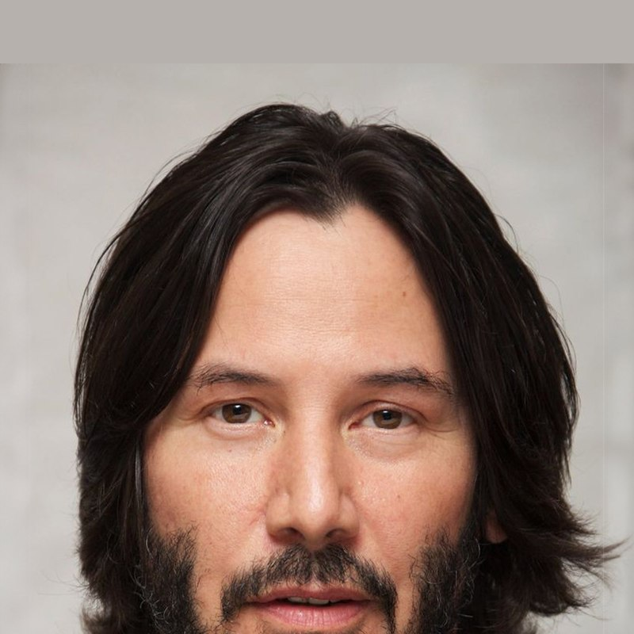
keanu-reevescanonical / expected-m / editorial label 8.5aggregate raw 3.236 to 3.561rank error 0.309 to 0.037 (improvement 0.272)display |error| 2.32 to 2.02 (descriptive)shift (0, -163.12) px; padding 0%; face visible 82.6%conor-mcgregorcanonical / expected-m / editorial label 7.0aggregate raw 2.788 to 3.450rank error 0.340 to 0.105 (improvement 0.235)display |error| 1.74 to 0.62 (descriptive)shift (0, -143.28) px; padding 0%; face visible 85.55%
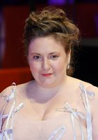
lena-dunhamcanonical / expected-f / editorial label 3.5aggregate raw 3.985 to 3.780rank error 0.813 to 0.681 (improvement 0.133)display |error| 3.69 to 3.26 (descriptive)shift (0, -115.38) px; padding 0%; face visible 91.1%
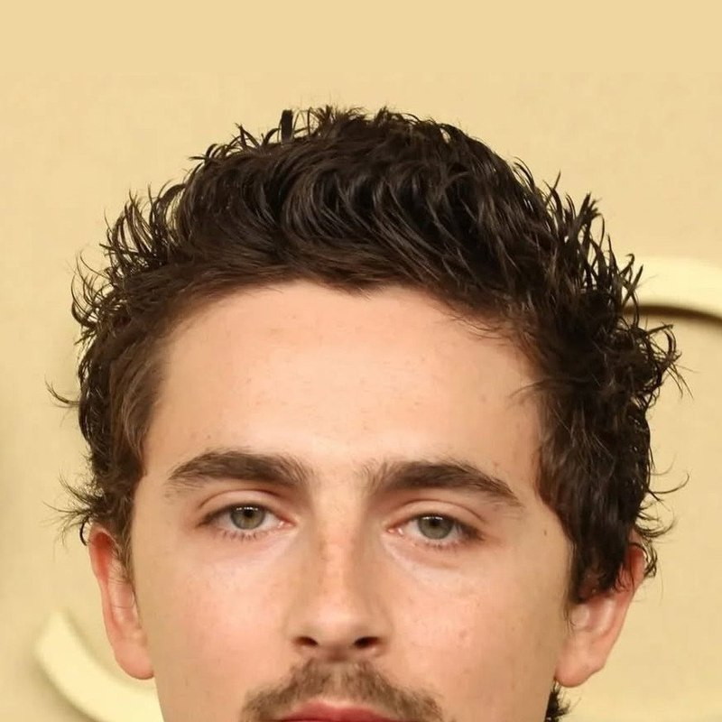
timothee-chalametcanonical / expected-m / editorial label 8.5aggregate raw 3.883 to 3.622rank error 0.111 to 0.012 (improvement 0.099)display |error| 1.56 to 1.94 (descriptive)shift (0, -198.48) px; padding 0%; face visible 74.57%george-clooneycanonical / expected-m / editorial label 8.5aggregate raw 3.845 to 3.618rank error 0.099 to 0.012 (improvement 0.086)display |error| 1.63 to 1.95 (descriptive)shift (0, -124.03) px; padding 0%; face visible 89.07%
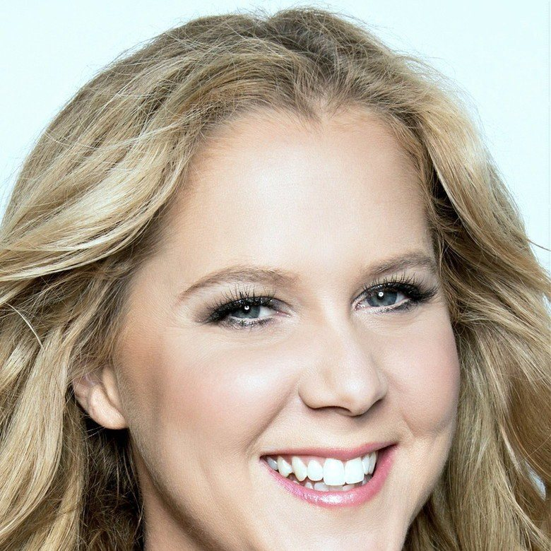
amy-schumercanonical / expected-f / editorial label 4.5aggregate raw 3.745 to 3.590rank error 0.578 to 0.494 (improvement 0.084)display |error| 2.21 to 2.02 (descriptive)shift (-13.85, -110.86) px; padding 0%; face visible 93.82%harry-stylescanonical / expected-m / editorial label 8.0aggregate raw 2.335 to 2.573rank error 0.673 to 0.599 (improvement 0.074)display |error| 4.76 to 3.84 (descriptive)shift (0, -113.5) px; padding 0%; face visible 90.02%
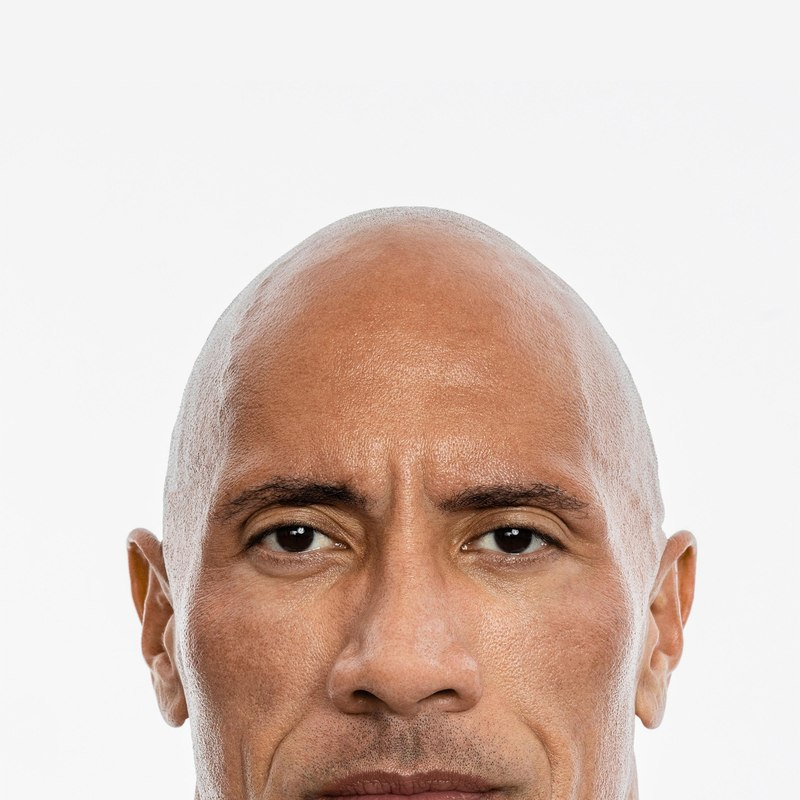
dwayne-johnsoncanonical / expected-m / editorial label 7.5aggregate raw 3.306 to 3.458rank error 0.074 to 0.025 (improvement 0.049)display |error| 1.26 to 1.11 (descriptive)shift (0, -194.96) px; padding 0%; face visible 77.62%
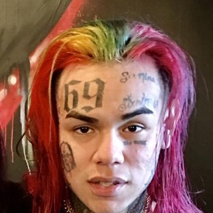
tekashi-6ix9inecanonical / expected-m / editorial label 4.0aggregate raw 3.080 to 2.997rank error 0.321 to 0.272 (improvement 0.049)display |error| 1.99 to 1.86 (descriptive)shift (0, -28.3) px; padding 0%; face visible 98.53%
Canonical portraits: largest rank-error regressions
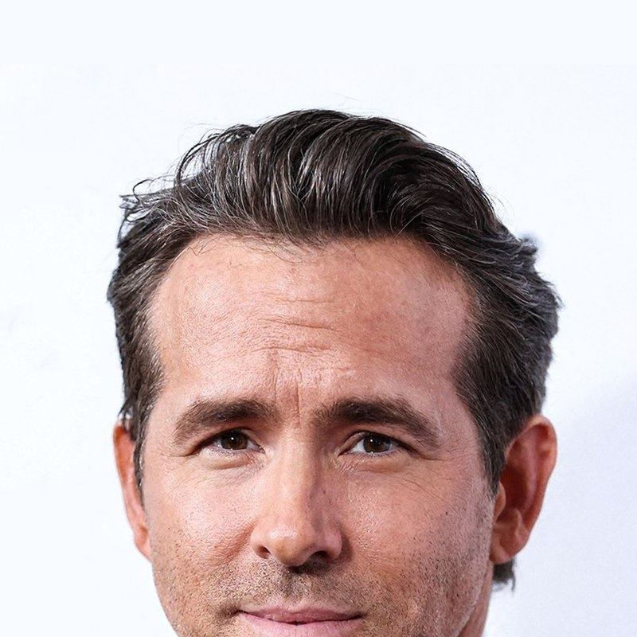
ryan-reynoldscanonical / expected-m / editorial label 8.0aggregate raw 3.514 to 3.084rank error 0.019 to 0.302 (improvement -0.284)display |error| 1.56 to 2.00 (descriptive)shift (0, -171.21) px; padding 0%; face visible 79.1%barack-obamacanonical / expected-m / editorial label 7.1aggregate raw 3.383 to 3.038rank error 0.056 to 0.216 (improvement -0.160)display |error| 0.78 to 1.17 (descriptive)shift (0, -95.23) px; padding 0%; face visible 96.72%
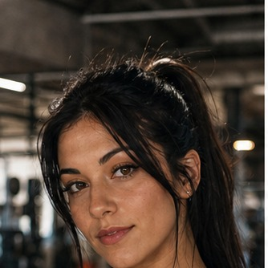
tifa-lockhartcanonical / expected-f / editorial label 9.5aggregate raw 3.591 to 3.356rank error 0.373 to 0.518 (improvement -0.145)display |error| 2.98 to 3.21 (descriptive)shift (0, -23.69) px; padding 0%; face visible 100%
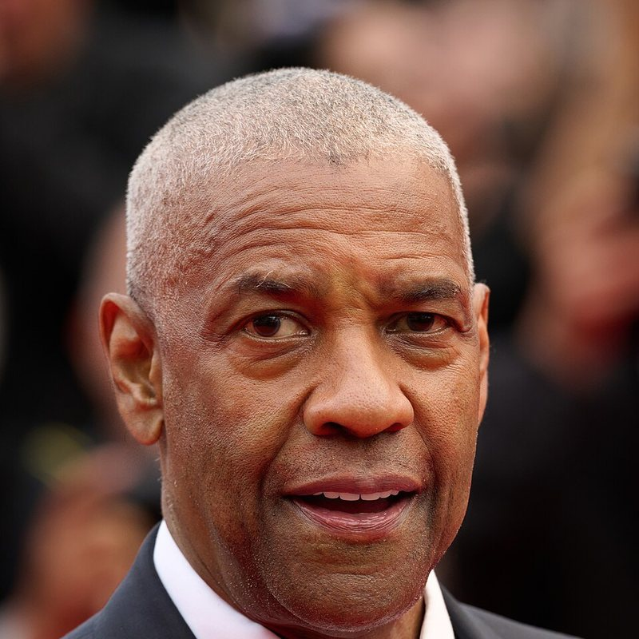
denzel-washingtoncanonical / expected-m / editorial label 8.8aggregate raw 2.687 to 2.382rank error 0.704 to 0.790 (improvement -0.086)display |error| 4.07 to 5.40 (descriptive)shift (0, -41.93) px; padding 0%; face visible 100%asmr-darlingcanonical / expected-f / editorial label 7.4aggregate raw 2.923 to 2.853rank error 0.157 to 0.229 (improvement -0.072)display |error| 1.68 to 1.86 (descriptive)shift (-7.31, -7.31) px; padding 0%; face visible 100%marzcanonical / expected-f / editorial label 7.8aggregate raw 3.780 to 3.903rank error 0.241 to 0.313 (improvement -0.072)display |error| 1.04 to 0.82 (descriptive)shift (9.64, -8.71) px; padding 0%; face visible 100%
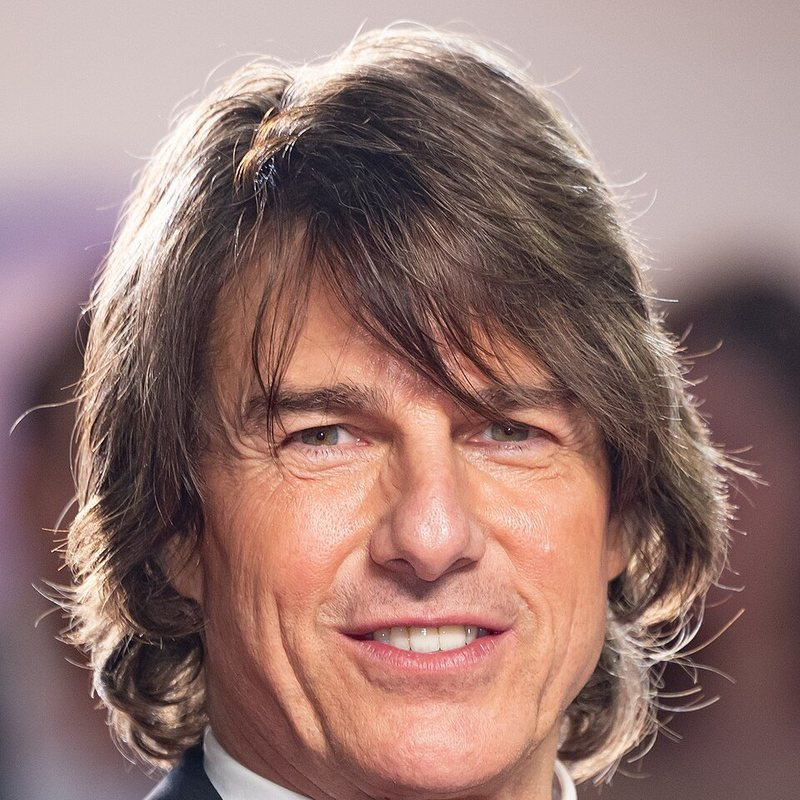
tom-cruisecanonical / expected-m / editorial label 8.7aggregate raw 3.259 to 3.226rank error 0.278 to 0.340 (improvement -0.062)display |error| 2.50 to 2.53 (descriptive)shift (0, -63.18) px; padding 0%; face visible 100%
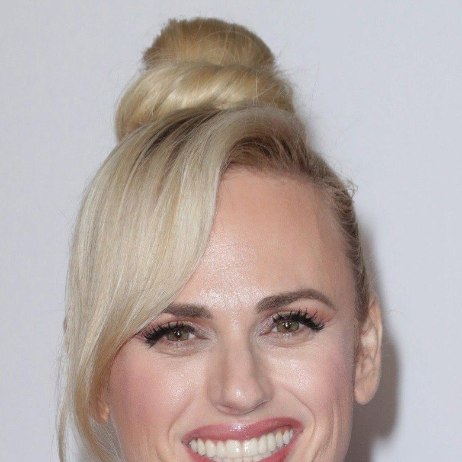
rebel-wilsoncanonical / expected-f / editorial label 5.4aggregate raw 3.551 to 3.628rank error 0.392 to 0.452 (improvement -0.060)display |error| 1.07 to 1.16 (descriptive)shift (0, -167.58) px; padding 0%; face visible 78.25%
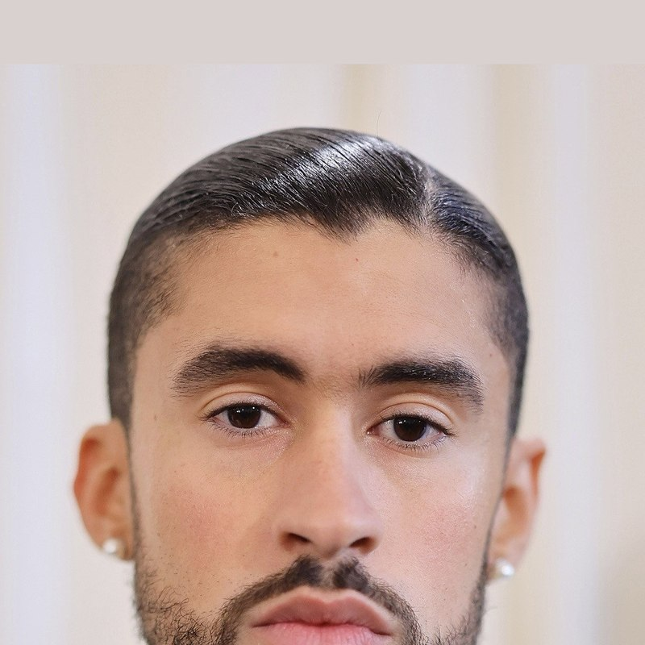
bad-bunnycanonical / expected-m / editorial label 6.5aggregate raw 3.725 to 3.814rank error 0.389 to 0.438 (improvement -0.049)display |error| 0.18 to 0.31 (descriptive)shift (0, -184.31) px; padding 0%; face visible 81.06%
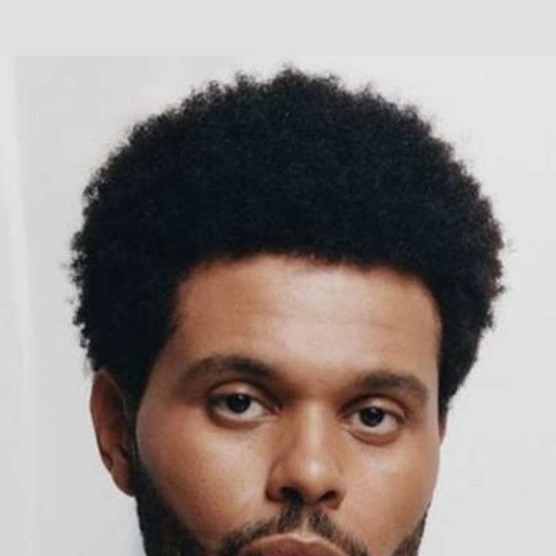
the-weekndcanonical / expected-m / editorial label 6.0aggregate raw 3.382 to 3.491rank error 0.302 to 0.352 (improvement -0.049)display |error| 0.32 to 0.42 (descriptive)shift (0, -166.66) px; padding 0%; face visible 78.12%
Gallery identities: largest rank-error improvements
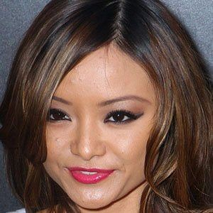
tila-tequilagallery_identity / expected-f / editorial label 5.0aggregate raw 3.428 to 3.357rank error 0.304 to 0.201 (improvement 0.103)display |error| 1.36 to 1.29 (descriptive)shift (0, -20.95) px; padding 0%; face visible 100%
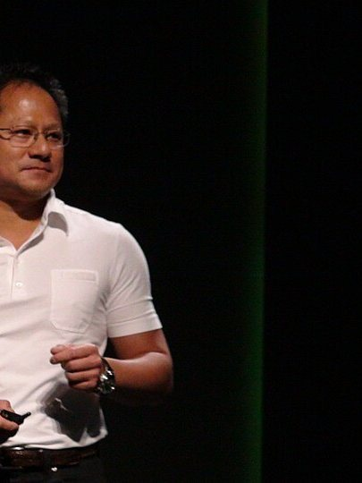
jensen-huanggallery_identity / expected-m / editorial label 5.3aggregate raw 2.643 to 2.854rank error 0.104 to 0.052 (improvement 0.052)display |error| 0.80 to 0.24 (descriptive)shift (39.64, 0) px; padding 0%; face visible 83.55%
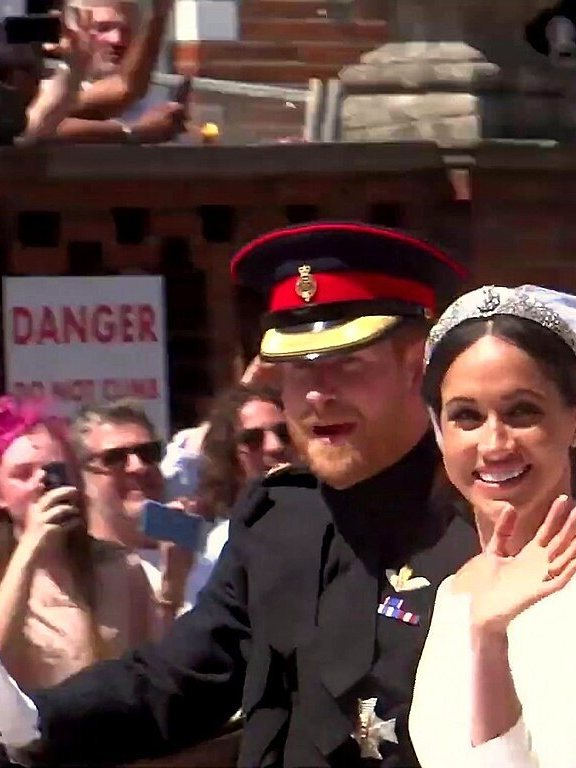
prince-harrygallery_identity / expected-m / editorial label 7.2aggregate raw 2.759 to 2.835rank error 0.427 to 0.385 (improvement 0.042)display |error| 2.08 to 1.73 (descriptive)shift (-34.8, 0) px; padding 0%; face visible 100%
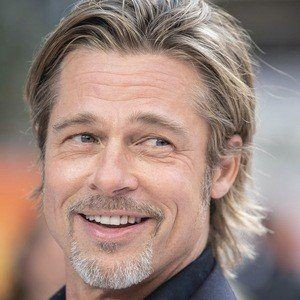
brad-pittgallery_identity / expected-m / editorial label 9.5aggregate raw 3.049 to 3.102rank error 0.583 to 0.542 (improvement 0.042)display |error| 3.56 to 3.48 (descriptive)shift (10.73, -9.65) px; padding 0%; face visible 100%evil-addamsgallery_identity / expected-f / editorial label 7.8aggregate raw 3.804 to 3.784rank error 0.294 to 0.253 (improvement 0.041)display |error| 1.01 to 1.03 (descriptive)shift (-33.29, 0) px; padding 0%; face visible 100%
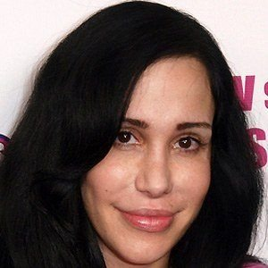
nadya-sulemangallery_identity / expected-f / editorial label 4.0aggregate raw 3.522 to 3.474rank error 0.412 to 0.371 (improvement 0.041)display |error| 2.44 to 2.40 (descriptive)shift (-1.48, -22.19) px; padding 0%; face visible 100%
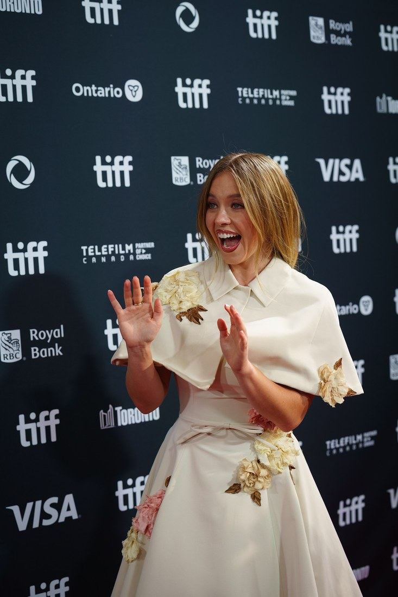
sydney-sweeneygallery_identity / expected-f / editorial label 9.0aggregate raw 3.481 to 3.513rank error 0.418 to 0.376 (improvement 0.041)display |error| 2.59 to 2.56 (descriptive)shift (0, -11.96) px; padding 0%; face visible 100%
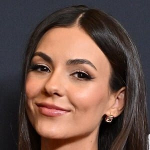
victoria-justicegallery_identity / expected-f / editorial label 8.5aggregate raw 3.082 to 3.125rank error 0.588 to 0.546 (improvement 0.041)display |error| 2.51 to 2.45 (descriptive)shift (0.42, -2.91) px; padding 0%; face visible 100%whispersredgallery_identity / expected-f / editorial label 6.0aggregate raw 3.686 to 3.651rank error 0.448 to 0.407 (improvement 0.041)display |error| 0.63 to 0.59 (descriptive)shift (0, 95.12) px; padding 0%; face visible 100%
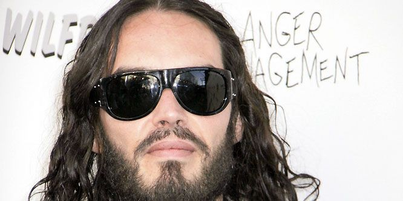
russell-brandgallery_identity / expected-m / editorial label 7.0aggregate raw 3.370 to 3.351rank error 0.094 to 0.062 (improvement 0.031)display |error| 0.70 to 0.72 (descriptive)shift (13.07, -4.18) px; padding 14.32%; face visible 100%
Gallery identities: largest rank-error regressions
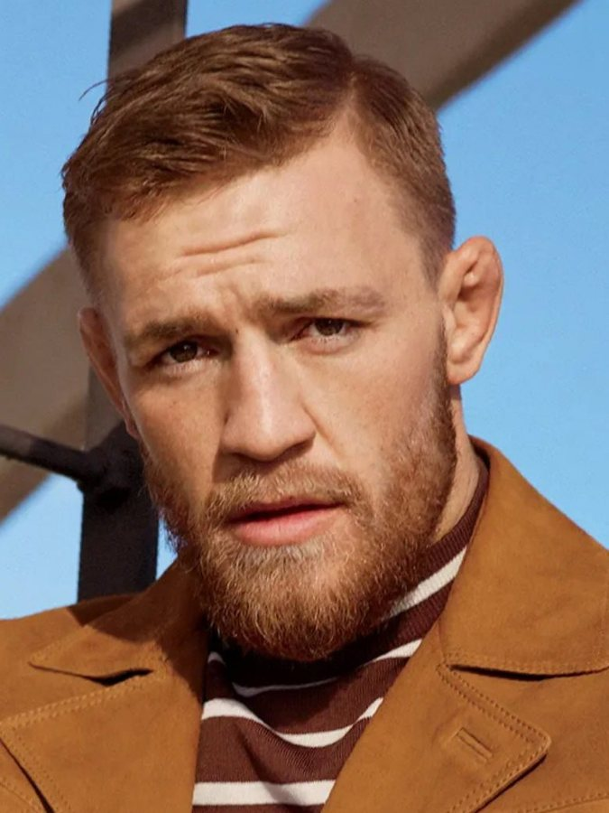
conor-mcgregorgallery_identity / expected-m / editorial label 7.0aggregate raw 3.335 to 3.364rank error 0.052 to 0.094 (improvement -0.042)display |error| 0.73 to 0.70 (descriptive)shift (13.43, 0) px; padding 0%; face visible 100%
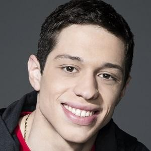
pete-davidsongallery_identity / expected-m / editorial label 5.0aggregate raw 3.327 to 3.352rank error 0.396 to 0.438 (improvement -0.042)display |error| 1.26 to 1.28 (descriptive)shift (-4.06, -9.61) px; padding 0%; face visible 100%
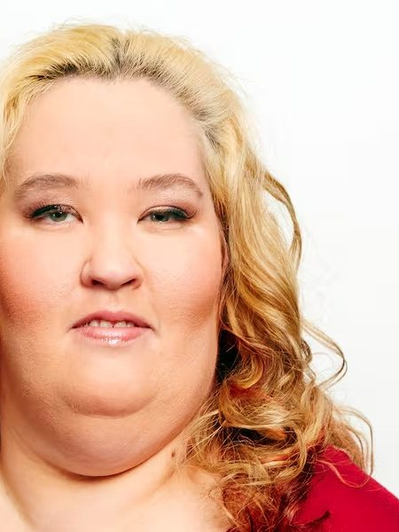
mama-junegallery_identity / expected-f / editorial label 3.5aggregate raw 3.195 to 3.259rank error 0.211 to 0.253 (improvement -0.041)display |error| 2.63 to 2.70 (descriptive)shift (94.52, 0) px; padding 0%; face visible 96.09%
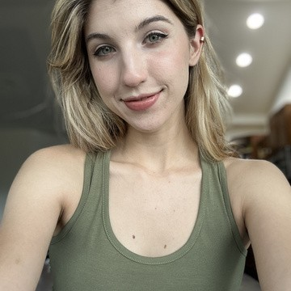
frivolousfoxgallery_identity / expected-f / editorial label 7.2aggregate raw 3.765 to 3.792rank error 0.376 to 0.418 (improvement -0.041)display |error| 0.46 to 0.42 (descriptive)shift (0, 44.51) px; padding 0%; face visible 98.76%
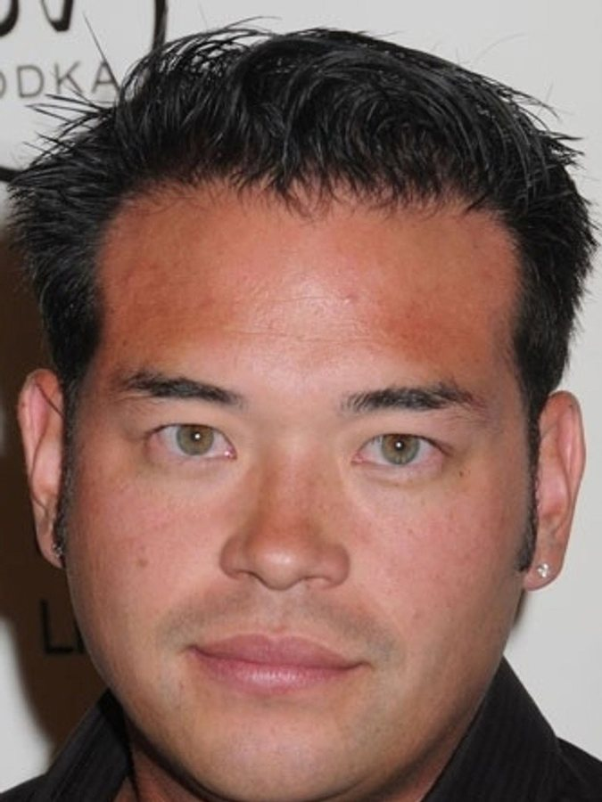
jon-gosselingallery_identity / expected-m / editorial label 4.5aggregate raw 2.639 to 2.590rank error 0.047 to 0.078 (improvement -0.031)display |error| 0.02 to 0.26 (descriptive)shift (0, -81.01) px; padding 17.79%; face visible 100%
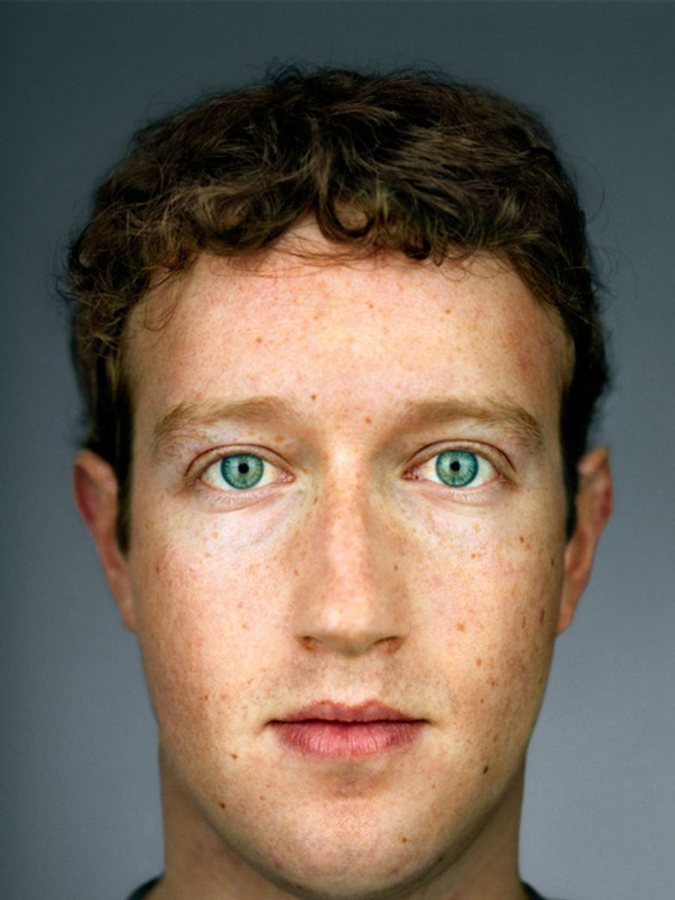
mark-zuckerberggallery_identity / expected-m / editorial label 3.5aggregate raw 3.399 to 3.477rank error 0.589 to 0.620 (improvement -0.031)display |error| 2.83 to 2.91 (descriptive)shift (0, -69.13) px; padding 17.77%; face visible 100%
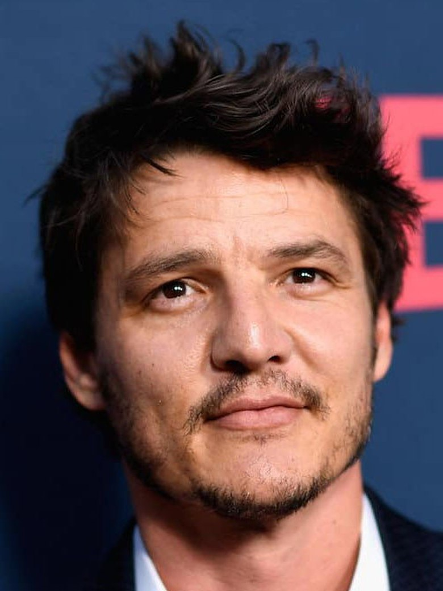
pedro-pascalgallery_identity / expected-m / editorial label 7.5aggregate raw 3.343 to 3.333rank error 0.036 to 0.068 (improvement -0.031)display |error| 1.22 to 1.23 (descriptive)shift (-16.35, 0) px; padding 0%; face visible 100%bella-thornegallery_identity / expected-f / editorial label 7.5aggregate raw 3.692 to 3.703rank error 0.227 to 0.258 (improvement -0.031)display |error| 0.86 to 0.85 (descriptive)shift (11.96, 0) px; padding 0%; face visible 100%barack-obamagallery_identity / expected-m / editorial label 7.1aggregate raw 3.096 to 3.088rank error 0.156 to 0.177 (improvement -0.021)display |error| 1.09 to 1.10 (descriptive)shift (3.39, 0) px; padding 2.21%; face visible 100%
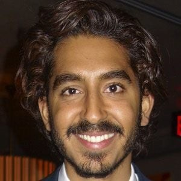
dev-patelgallery_identity / expected-m / editorial label 8.0aggregate raw 3.484 to 3.471rank error 0.057 to 0.078 (improvement -0.021)display |error| 1.59 to 1.60 (descriptive)shift (0, -13.77) px; padding 0%; face visible 100%